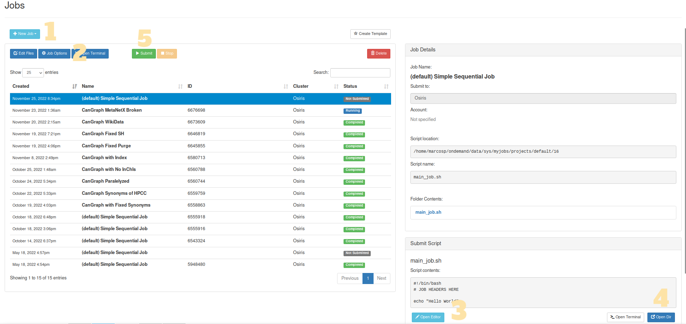
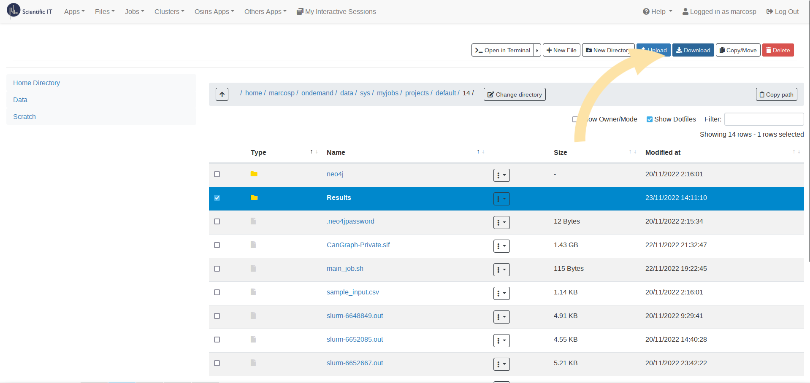

Running the Software
In this page
Running the Software#
There are two supported ways of running the CanGraph package: you can either launch the CanGraph script from the command line software or you can use a pre-packaged apptainer image. Of these, there are two versions: a Private Image, which is built with the DataBases pre-bundled so that is is easier to use, although a bit more heavy to transmit; and a Public one, in which DataBases need to be manually set up at least at first use and is thus less heavy, but more resource intensive. Because the Private version contains copyrighted information, only the Public compiled file is provided in the downloads page
You can thus either download a pre-packaged file, compile one yourself or use the program’s Command Line Interface; since all three options use the same underlying script (CanGraph.main) to work, they will all work independently of the form you choose to run the program under.
In the rest of this example, we will be providing examples on how to run the software from the command line; if you want to use an Apptainer Image instead, just replace python3 main.py by ./yourcontainer.sif
Setting up the environment#
Note
If you are running a pre-packaged file, you can skip directly to the usage section.
In order for the script to work properly, we need to set up some things first; the most important of them being the DataBases folder, which is where all important information regarding all databases will be stored. To aid in this, the CanGraph.setup was developed; you can read more about how it works and how to use it in its own usage page, but, essentially, you should run:
python3 setup.py -i --databases databasefolder
where databasefolder is the folder where all databases will be stored (keep this value in hand because we will use it later on for the main module).
The software will then guide you, in an interactive an easy to understand way, through the process of setting up all the needed databases, as well as on the generation of an index that might be needed later on in the database search. Once the process is finished, you shall proceed to the next step.
Starting the Neo4J server#
Note
If you are running a pre-packaged file, you can skip directly to the usage section.
As a graph-oriented software, CanGraph uses Neo4J as its underlying DataBase Management System. This means that, in order for the program to work, it needs to stablish a connection to a Neo4J database, where it will store all the relevant information. To simplify the process of downloading, configuring, and starting the Neo4J server, some functions have been created for you on the setup module. You can call them using the script below, which will create a neo4j folder in CanGraph’s WorkDir:
python3 setup.py --neo4j neo4j --neo4j_username neo4j --neo4j_password neo4j
For it to work propperly, please ensure that there are no neo4j sessions running before the command call. The program will then be installed alongside the main program, with its password being stored in a file called .neo4jpassword. You can then start your very first neo4j server by running: ./neo4j/bin/neo4j start; its username will be neo4j, and its password can be seen by running: head -n 1 .neo4jpassword).
You can alternatively start your own server, either by using a previously installed version of neo4j or by running an online version of the database; the only difference being, that you will need to provide the username, bolt adress and password to main.py as arguments.
Understanding the arguments#
The program presents the following arguments, which can be passed, as the text below explains, just after the name of the program:
usage: python3 main.py [-h] [-c] [-n] [-s] [-w] [-i] --query QUERY
[--dbfolder DBFOLDER] [--results RESULTS]
[--adress ADRESS] [--username USERNAME]
[--password PASSWORD]
Named Arguments#
- -c, --check_args
Checks if the rest of the arguments are OK, then exits
- -n, --noindex
Runs the program checking each file one-by-one, instead of using a JSON index
- -s, --similarity
Deactivates the import of information based on Structural Similarity.This might dramatically increase processing time; default is True.
- -w, --webdbs
Activates import of information based on web databases.This might dramatically increase processing time; default is True.
- -i, --interactive
tells the script if it wants interaction from the user and more information shown to them; similar to –verbose
- --query
The location of the CSV file in which the program will search for metabolites
- --dbfolder
The folder indicated to
`setup.py`as the one where your databases will be stored; default is./DataBasesDefault: DataBases
- --results
The folder where the resulting GraphML exports will be stored; default is
./ResultsDefault: “Results”
- --adress
the URL of the database, in neo4j:// or bolt:// format
Default: bolt://localhost:7687
- --username
the username of the neo4j database in use
Default: “neo4j”
- --password
the password for the neo4j database in use. NOTE: Since passed through bash, you may need to escape some chars
Default: “neo4j”
The Query File#
Of these arguments, only --query is required, since the program requires for at least one query to search among all the different databases. This query file should take the form of a table of Comma Separated Values, where the columns are as follows:
Name |
InChI |
HMDB_ID |
ChEBI_ID |
MeSH_ID |
|---|
Inside each comma-separated column, you can either have one string of text (one field) or a series of fields separated by semi-colons. For example, you can either have:
Name,InChI,HMDB_ID,ChEBI,MeSH_ID
1-Amino-2-propanol,,HMDB0012136,CHEBI:19030,
where there is just one Name, 1-Amino-2-propanol, in the name column; or:
Name,InChI,HMDB_ID,ChEBI,MeSH_ID
1-Amino-2-propanol;1-aminopropanol,,HMDB0012136,CHEBI:19030,
where 1-Amino-2-propanol is specified as a synonym / another query of interest for the Name field.
This query file can be either created in LibreOffice Calc / Microsoft Excel, simply generating a new file with as many of the proposed columns as you’d like, and filling them with the values you want the program to search based on. Any other columns present in the CSV file will be ignored by the program, which will identify each row as the information pertaining to a given metabolite, thus having as many metabolites as rows are present on the CSV, with each metabolite having as many identifiers as columns are present and as many synonyms for each identifier as semicolon values are in a given cell.
Note
Pay special attention to the formatting of the columns; if they are wrongly specified (for example, ChEBI instead of ChEBI_ID), the program will ignore them, too.
Other Aguments of Interest#
Some other arguments that require consideration are:
–webdbs: When set to false (
--webdbs False), no web databases are queried. This makes the program run fully offline, gets more reliable results and runs faster, but it returns less information.–similarity: Disables search based on similarity criteria computed using RDKit. This reduces search time, but includes less results
–noindex: Runs the program by using direct search, instead of using the database index generated with the
setupmodule. The use of this option is discouraged, as it is slower and produces less accurate results; it is presented here just for backwards compatibility and because the “Name” chain can be used as a wildcard field for exact text matches in the unindexed files.
Once you have the query ready, you can run it using: python3 main.py --query inputfile.csv --password $(head -n 1 .neo4jpassword). This assumes that all the defaults are set to what is specified above in this same section, and sets neo4j’s password to be whatever is stored in .neo4jpassword; you can add any additional arguments as you wish.
The time the program takes to process is variable, and depends on the number of matches; it may take anything from a few seconds to more than a day, as every match means, approximately, 3-5 minutes of extra processing time.
Running on Slurn#
Note
You need to install Apptainer to use the pre-packaged files, but you can use the CLI without it.
For IARC users, as well as for any other user with access to it, the use of a High-Performance Computing platform is advised, since Neo4J is quite unstable and resource-hungry, and the program may take a long time to process during which, if using it in your own machine, it is advisable not to run any other programs at the same time. Thus, a tutorial follows:
Log into IARC’s HPC Portal. There, click on Jobs > Job Composer in the top menu

Create a new Job. To do this, click on the light blue New Job button, and then select one of the option; it is recommended that you choose From Default Template
(Optional) Change the Job’s name. You can do so by selecting any job and clicking Job Options
Modify the Runscript. After clicking on the Open Editor button, an editor will appear in a new window. You should modify
main_job.shfor it to include an order calling the script preceded by another giving the HPC permission to use it (chmod). For example, if you are using the pre-packaged CanGraph-Private image:chmod +755 CanGraph-Private.sif ./CanGraph-Private.sif --query sample_input.csv
If you are, however, using the Command Line Interface, you may want to also include the
--databasesparameter, and so onAdd all the necessary files: Click on Open Dir, which will open a new window containing all the files in the current WorkDir. There, you should Drag and Drop the necessary files: the
DataBasesfolder in case you are using it, the different scripts and modules that form the Command Line Program (possibly in compressed.zipform), the apptainer image, the input file…Once everything is ready, run the file!: You can click on the green Submit button, which will mark your Job in blue as Running. While the HPC is working on your query, a new file, called slurm-xxxxxxx.out, will appear on the side Folder Contents panel, which can also be consulted using the Open Dir button. This file contains an output of the different logs the program is providing, enabling you to track the process and see how it is going. Once processing is finished, a green Completed, or a red Failed, label will appear. The results will appear in the folder provided to the program as
--results; by default,./Results.
Note
Sometimes, the software might not run in one-go, but might need two activations: one to install neo4j, and one for the run itself. Out of precaution, it is recommended you refresh 1 minute after submitting the job to see if it is prematurely marked as completed (with no results in the folder). If so, just re-submit the job: things should work fine this time.

Download the Results: You will find them inside the
--resultsfolder, and you can either download the full folder (Select > Download) or get individual files by selecting them inside the folder.

Known Issues#
Here are some known issues you may encounter when running the software, together with possible solutions:
Sometimes, the Apptainer-packaged version refuses to run all-in-one if it needs to set up the database folder or the neo4j program from scratch. If this happens, try re-launching the program; on this second run, it should work without problems
On IARC’s HPC system, the Public version of the Apptainer-packaged program does not work, outputting a
subprocess.CalledProcessErrorwith error code:Command '['cypher-shell', '-d', 'system', '-u', 'neo4j', '-p', 'neo4j', "ALTER CURRENT USER SET PASSWORD FROM 'X' TO 'Y'"]' returned non-zero exit status 1.. To our knowledge, this happens only on the HPC, and nowhere else; if you encounter this error, consider either building/using the Private version, or installing the CLI